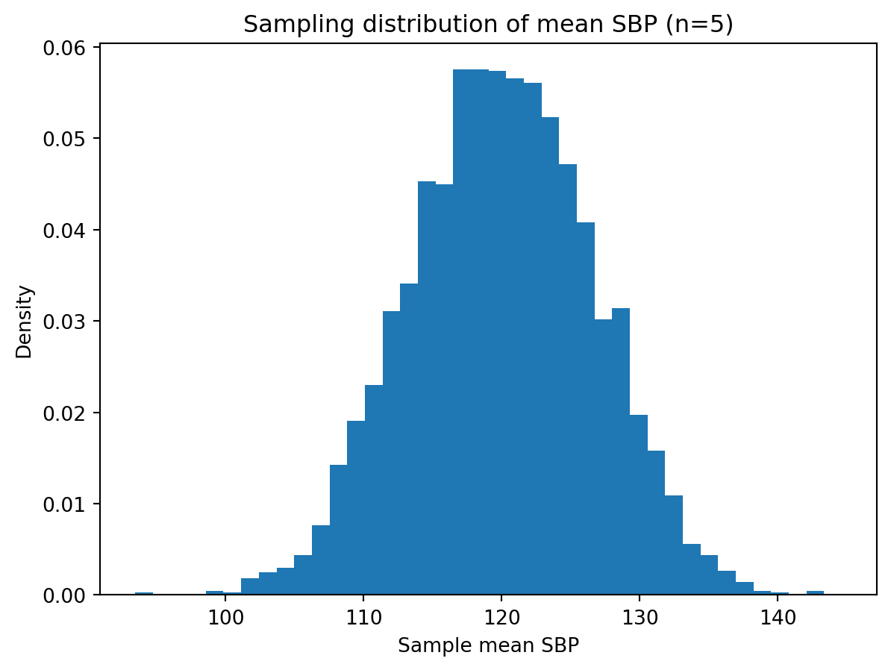
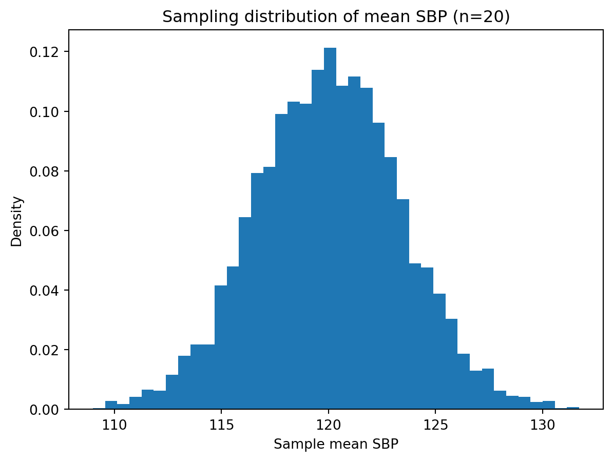
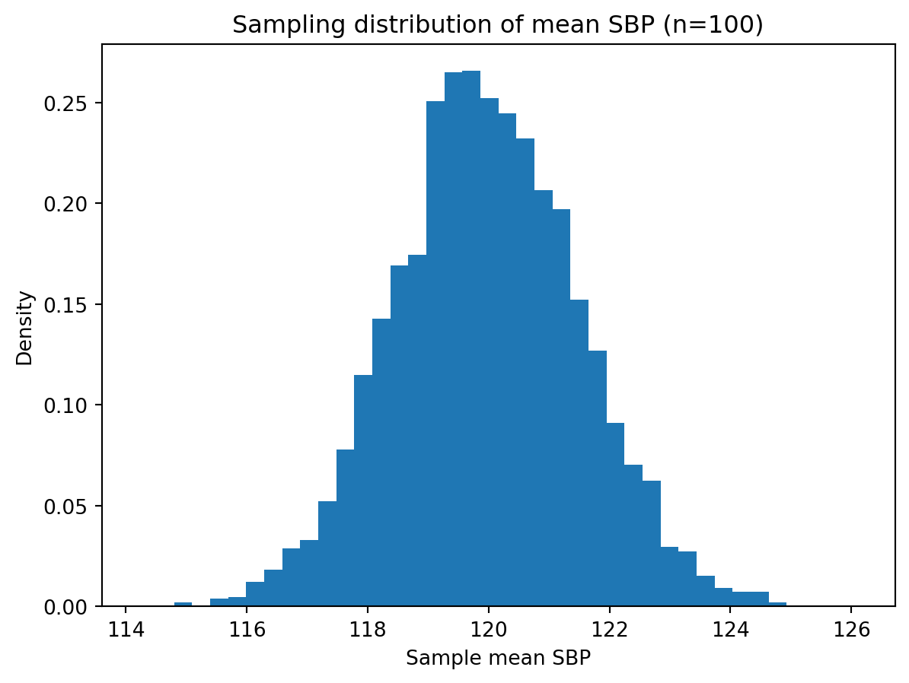

STAT 610 – Introduction to Statistical Inference (Bootcamp)
Author
Dr. Mighty Itauma
Simulation of LLN and CLT for Systolic Blood Pressure
Code
import numpy as npimport matplotlib.pyplot as pltnp.random.seed(42)# Suppose true systolic BP in a population ~ Normal(120, 15^2)mu =120sigma =15def simulate_sample_means(n, n_rep=5000): means = []for _ inrange(n_rep): sample = np.random.normal(mu, sigma, size=n) means.append(np.mean(sample))return np.array(means)sample_sizes = [5, 20, 100]for n in sample_sizes: means = simulate_sample_means(n)print(f"n = {n}: mean of sample means = {means.mean():.2f}, sd = {means.std():.2f}") plt.figure() plt.hist(means, bins=40, density=True) plt.title(f"Sampling distribution of mean SBP (n={n})") plt.xlabel("Sample mean SBP") plt.ylabel("Density") plt.show()
n = 5: mean of sample means = 120.01, sd = 6.63

n = 20: mean of sample means = 120.02, sd = 3.40

n = 100: mean of sample means = 119.97, sd = 1.52

Comparing Estimators: Sample Mean vs First Observation
Code
import numpy as npnp.random.seed(123)mu =120sigma =15n =10# sample sizen_rep =10000# number of simulationsmeans = []first_obs = []for _ inrange(n_rep): sample = np.random.normal(mu, sigma, size=n) means.append(np.mean(sample)) first_obs.append(sample[0])means = np.array(means)first_obs = np.array(first_obs)# Compute empirical bias, variance, and MSEdef summarize(estimates, true): bias = np.mean(estimates) - true var = np.var(estimates, ddof=0) mse = np.mean((estimates - true)**2)return bias, var, msebias_mean, var_mean, mse_mean = summarize(means, mu)bias_first, var_first, mse_first = summarize(first_obs, mu)print("Sample mean estimator:")print(f" Bias = {bias_mean:.3f}")print(f" Var = {var_mean:.3f}")print(f" MSE = {mse_mean:.3f}")print("\nFirst observation estimator:")print(f" Bias = {bias_first:.3f}")print(f" Var = {var_first:.3f}")print(f" MSE = {mse_first:.3f}")
Sample mean estimator:
Bias = 0.020
Var = 22.223
MSE = 22.223
First observation estimator:
Bias = -0.015
Var = 228.219
MSE = 228.219
import numpy as npdef fisher_information_normal_known_sigma(sigma):return1/ sigma**2sigma =15I = fisher_information_normal_known_sigma(sigma)print("Fisher Information for μ:", I)# Asymptotic variance of MLE for μn =200asymp_var =1/ (n * I)print("Asymptotic variance of μ̂:", asymp_var)print("Asymptotic SE:", np.sqrt(asymp_var))
Fisher Information for μ: 0.0044444444444444444
Asymptotic variance of μ̂: 1.125
Asymptotic SE: 1.0606601717798212
n = 100
Fisher Information for μ: 0.0044444444444444444
Asymptotic variance of μ̂: 2.25
Asymptotic SE: 1.5
n = 200
Fisher Information for μ: 0.0044444444444444444
Asymptotic variance of μ̂: 1.125
Asymptotic SE: 1.0606601717798212
As n increases, asymptotic SE decreases because variance shrinks at a rate of \(1/𝑛\).